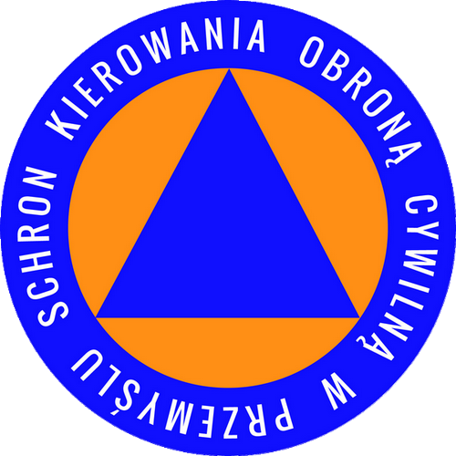

S.K.O.C. czyli Schron Kierowania Obroną Cywilną to obiekt z czasów zimnej wojny mieszczący się na terenie Przemyśla. Wybudowano go w latach 60-tych pod Szkołą Podstawową nr 14. Przez blisko 50 lat był obiektem tajnym. Od 1975 roku podział administracyjny kraju obejmował 49 województw - każde miało posiadać własny schron tej rangi. O znaczeniu schronu świadczy chociażby tabliczka na drzwiach jednego z pomieszczeń: WOAS (Wojewódzki Ośrodek Analizy Skażeń). W 2016 roku, staraniem ludzi z PSRH pod przewodnictwem Mirosława Majkowskiego, uruchomiono tam muzem.